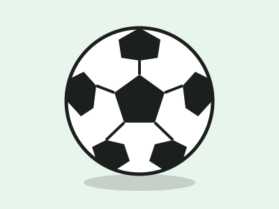
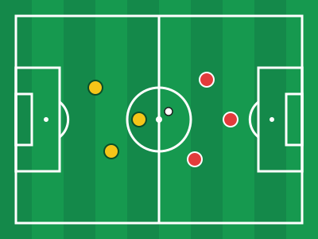
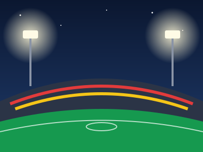
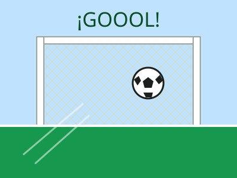

Portero
Último defensor del equipo. Es el único que puede usar las manos dentro de su área.

Pasión FútbolEl deporte más popular del mundo
Once jugadores, un balón y noventa minutos para dejarlo todo en la cancha. Conoce las posiciones, mira nuestra galería y lleva el marcador de tu propio partido.
Ir al marcador
Cada equipo tiene once jugadores en la cancha y cada posición cumple una función distinta.
Último defensor del equipo. Es el único que puede usar las manos dentro de su área.
Protege su arco, recupera balones y frena los ataques del rival.
Conecta la defensa con el ataque, distribuye el juego y controla el ritmo del partido.
Su misión principal es crear oportunidades y convertir goles.
Toca una imagen para verla en grande.


Escribe los nombres de los equipos, inicia el cronómetro y registra cada gol.